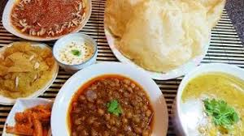
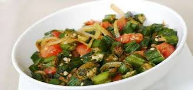

What does it look like?
Halwa Puri Aur Bhindhi ka Salan
Recipe by Talat Hussain

Ingredients
puri
- Flour 2 cups (Make about 20)
- Oil 2 tsp
- Oil for deep frying
Bhindi ka Salan
- Meadin size leady fingure 1kg
- Salt to test
- Zeera powder 1/2 tsp
- Crushed whole dried red chilies 1/2 tsp
- Haldi powder 1/4 tsp
Halwa
- Sujji (samolina) 1 cup
- Oil 2 tsp
- Sugar 1-1/2 cup
- Water 1/2 cup
- Seeds of small Illaichi 3
- Yellow food color (optional)
Instruction
Puri
- Make the dough with flour and 2 tsp oil and water as needed.
- Make into samll puri(pancake like) as flat as you can and deep and deep fry in hot oil.
Bhindi ka Salan
- Cut the leady fingure into small cubes.
- Add spices and 1 cup of water and leave on low heat.
- When soft,mash lightly.
Halwa
- put the sujji and oil in a pot along with illaichi seeds and fry until slightly brown on very low heat
- Meanwhile combine sugar and water to make a syrup.
- Add this to the sujji taking care not to burn yourself.
- If you want to color the halwa add the color add the color to the syrup before pouring it into the sujji.